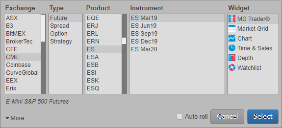
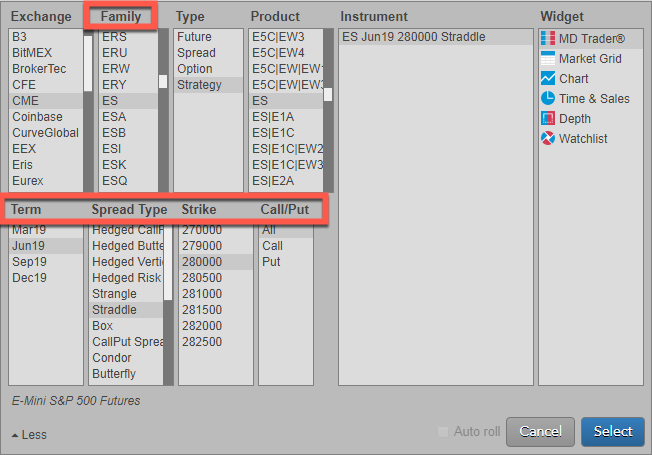
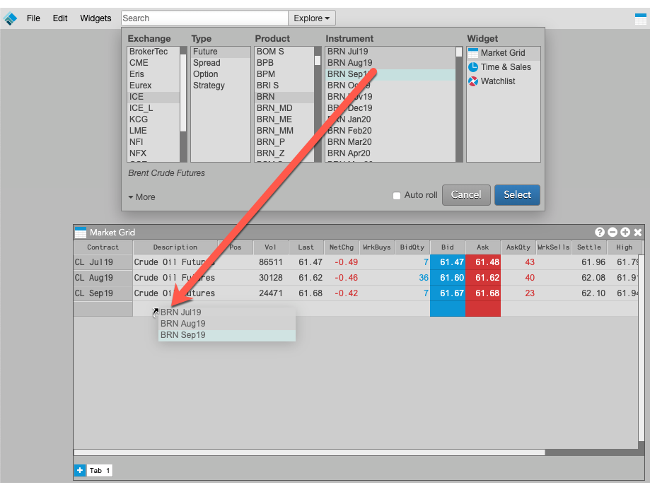

The Trade application provides you with the capability to quickly find instruments and trade them in your workspace. After creating and opening a workspace, you can use the Market Explorer in Basic mode or Advanced mode to find an instrument and open a widget. You can also drag instruments from the Market Explorer to add them to existing widgets.
Market Explorer opens in Basic mode as shown when you click Explore on the TT menu bar.

The following fields are available in Basic mode:
In addition to Basic mode, the Advanced mode allows you to easily find options instruments, exchange-defined spreads, and strategy instruments without using a contextual search. In Advanced mode, you can filter futures, options, spread, and strategy products by product family, expiry, spread type, strike, or Call/Put to select an instrument and open a widget.

Click More in Basic Mode to show the following additional fields in Advanced mode:
In addition to opening new widgets for instruments, you can also drag instruments from Market Explorer to widgets already opened in the workspace.

The following widgets support drag-and-drop from Market Explorer: